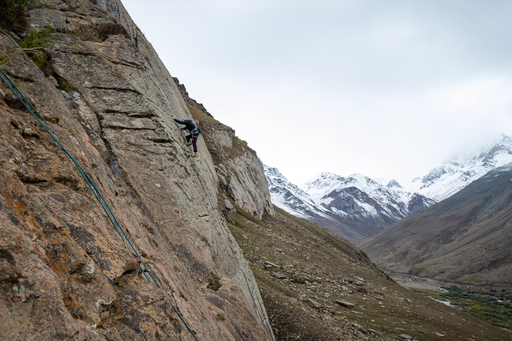

School programmes
& experiential learning
Learningin the mountains.
Adventure, nature, hands on skills and teamwork for schools, at Zoom Rock Garden in Sikkim and Suru Valley in Ladakh.
come explore, experiment, collaborate!
Who we are
An outdoor collective rooted in the Indian Himalayas
Crashpad brings together adventure sports, experiential learning, movement practices, festivals and community led initiatives.
Working across Suru Valley in Ladakh and Zoom Rock Garden in Sikkim, we create opportunities for people to learn new skills, take part in outdoor activities, experience different movement practices and connect through shared experiences.
We are a core team supported by volunteers, instructors, collaborators and local communities. Our team includes certified outdoor guides, climbers, movement practitioners, natural builders, musicians and event organisers, and every school programme is run by the same people who build and run our festivals.
We value shared learning and practical involvement. For schools, that means students don't just watch: they climb, build, navigate, cook and solve problems with their own hands.
 our crew in the mountains
our crew in the mountains
10+Years in the outdoors
10,000+People have joined us
2Himalayan bases

November to AprilZoom Rock Garden, Sikkim
Thirty acres of forest, boulders and open land with bouldering circuits, rope courses, farming and natural building. Our winter base for school programmes.

May to OctoberSuru Valley, Ladakh
A wild high landscape of towering rock, glacial rivers and open valleys. Home of Suru Outdoor Fest and our summer programmes.
The Crashpad02
What we believe
Learning happens beyond the classroom
“Some of the most meaningful learning happens beyond the classroom.”
Experiential learning is learning by doing, exploring and reflecting on real world experiences.
Whether it's climbing a rock face, building with natural materials, navigating a trail or working together to solve a challenge, every experience is a chance to develop new skills, build confidence, strengthen relationships and discover new perspectives. At Crashpad, learning isn't just about acquiring knowledge. It's about putting it into practice, learning from the experience, and carrying those lessons into everyday life.
- Experience comes first
Students understand balance on a slackline and teamwork on a rope before we put words to them. The doing makes the lesson stick.
- Reflection turns doing into learning
Every activity ends in a circle. What happened, what felt hard, what would you try differently? This is where growth happens.
- Nature is a teacher
Forests, rock and soil teach patience, observation and respect. We help students notice the living world around them.
- Challenge, with care
We set challenges just beyond comfort and support every student through them, with trained instructors and the right equipment.
- Together, not alone
Most of our activities only work as a team. Students learn to communicate, trust and lean on each other.
- Hands, not just heads
Building walls, growing food and lighting a safe fire build practical confidence that lasts long after the visit.
 learning by doing!
learning by doing!
What we believe03
Our method
How we teach
Every activity, from a first boulder to building an earthen wall, follows the same simple cycle.
- 01Do
Start with a real experience: a climb, a build, a trail, a team challenge. Instructors demonstrate, then step back and let students try.
- 02Reflect
Pause together. What happened? What felt hard? What worked? Short group circles give every voice space.
- 03Make sense
Connect the experience to skills and ideas: problem solving, collaboration, physics, ecology and the natural world.
- 04Apply
Try again, take on more, and carry the lesson home, into the classroom and into everyday life.
what it looks like on the rock
- DoA group of Grade 6 students tries a climbing route in pairs, one climbing, one belaying with an instructor.
- ReflectAt the bottom, each pair shares where they got stuck and how their partner helped.
- Make senseWe talk about body position, friction and trust, and why clear calls between partners keep everyone safe.
- ApplyThey swap roles and climb again, using one new idea. Most get higher the second time.
what we nurture
CuriosityCollaborationProblem solvingConfidenceResilienceConnection with nature
Our method04
School programmes · Zoom Rock Garden
Pick a few, or try them all
Programmes are full day visits. We choose activities according to the students' ages, group size and learning objectives, and every one is led by trained instructors with proper safety equipment.
 Top Rope ClimbingClimbing a real rock face on a rope held safely from above. Knots, belaying and trusting a partner.
Top Rope ClimbingClimbing a real rock face on a rope held safely from above. Knots, belaying and trusting a partner. BoulderingShort climbs on low boulders over thick crash pads. Puzzling, falling, laughing, trying again.
BoulderingShort climbs on low boulders over thick crash pads. Puzzling, falling, laughing, trying again. RappellingWalking backwards down a cliff on a rope, with an instructor beside every student.
RappellingWalking backwards down a cliff on a rope, with an instructor beside every student. High RopesBalance beams, swinging logs and wobbly bridges in the trees, clipped in the whole way.
High RopesBalance beams, swinging logs and wobbly bridges in the trees, clipped in the whole way. CampingPitching tents, cooking together and a night under the stars. Teamwork starts with the tent.
CampingPitching tents, cooking together and a night under the stars. Teamwork starts with the tent. SlacklineWalking a flat, bouncy line between two trees. Focus, balance and cheering each other on.
SlacklineWalking a flat, bouncy line between two trees. Focus, balance and cheering each other on. OrienteeringFinding hidden checkpoints with map and compass. Planning routes and reading the land.
OrienteeringFinding hidden checkpoints with map and compass. Planning routes and reading the land. Bush CraftBuilding shelters, lighting a safe fire and using what the forest offers.
Bush CraftBuilding shelters, lighting a safe fire and using what the forest offers. Natural BuildingMixing mud, packing earth and shaping real walls with our own hands.
Natural BuildingMixing mud, packing earth and shaping real walls with our own hands. FarmingSowing seeds, making compost and learning where food comes from.
FarmingSowing seeds, making compost and learning where food comes from.
Activities05
A sample day
9 AM to 4 PM, outdoors
A typical structure, adapted to group size, grade, weather and learning objectives.
- 9:00 to 9:30
Welcome & orientationIntroductions, icebreakers and safety briefing
- 9:30 to 10:30
Nature explorationOrienteering, nature walks and discovery games
- 10:30 to 10:45
Snack & water break
- 10:45 to 12:15
Adventure activityRock climbing, high ropes or rappelling, by grade
- 12:15 to 1:00
Nature educationBiodiversity, ecology or a related learning activity
- 1:00 to 2:00
Lunch & rest
- 2:00 to 3:00
Practical workshopNatural building, farming or bushcraft
- 3:00 to 3:45
Team challengeCollaborative problem solving
- 3:45 to 4:00
Reflection & departureGroup circle and shared reflections
 high ropes, all clipped in
high ropes, all clipped in
Safety & care
- Certified outdoor guides and a Wilderness First Aid certified team
- Risk assessment before every activity
- Age appropriate activities and trained supervision
- Proper safety equipment and briefings
A sample day07
Bring your school
Let's plan a day together
Every programme is planned with the school, around your students and what you want them to learn.
- 1Get in touch
Write to us with your school's name and contact details.
- 2Tell us about your group
Grade, group size, preferred dates and location.
- 3Share your objectives
What should students take away? We shape the day around it.
- 4We plan it together
Activities, timings, safety and logistics, confirmed with you.
 see you outdoors!
see you outdoors!
Programmes run at Zoom Rock Garden, Sikkim from November to April, and in Suru Valley, Ladakh from May to October. We also design custom programmes and extended camps for schools and groups.
come explore, experiment, collaborate and discover what you are capable of.
The Crashpad · Play · Explore · Learn08